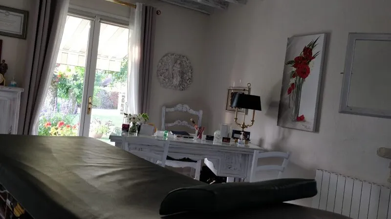

Magnétiseur à Troyes :
Soulager et Rééquilibrer Naturellement
Votre magnétiseur à Troyes vous propose des séances de magnétisme pour apaiser les douleurs, le stress, les troubles du sommeil et retrouver votre équilibre. Cabinet à Saint-Germain, accompagnement bienveillant avec Corinne Lacoste.

Dans cet article
- → Qu'est-ce que le magnétisme ?
- → Différence entre magnétisme et hypnose
- → Pour quels problèmes consulter un magnétiseur ?
- → Comment se déroule une séance de magnétisme ?
- → Mon approche combinée : magnétisme + hypnose
- → Témoignages patients
- → Choisir un magnétiseur sérieux à Troyes
- → Tarifs et informations pratiques
- → FAQ Magnétisme Troyes
Qu'est-ce que le magnétisme ?
Le magnétisme est une pratique ancestrale qui consiste à transmettre une énergie apaisante et rééquilibrante par les mains. On parle souvent de « passe magnétique » : le magnétiseur pose ses mains à proximité ou en léger contact sur le corps pour favoriser la circulation de l’énergie et aider l’organisme à retrouver son équilibre.
Cette énergie n’a rien de surnaturel : nous en produisons tous. Certaines personnes en disposent d’une quantité plus importante et ont appris à la canaliser pour en faire un outil d’accompagnement. Le magnétisme ne remplace pas la médecine ; il la complète en agissant sur le bien-être global, le stress et les blocages énergétiques.
- ✓ Pratique douce, sans douleur et sans effet secondaire.
- ✓ Compatible avec un suivi médical (traitements, examens).
- ✓ Adapté à tous les âges (adultes et enfants).
💡 Bon à savoir : Une séance de magnétisme à Troyes dure en général 45 min à 1 h. Vous restez habillé, assis ou allongé, dans un cadre calme et bienveillant.
Différence entre magnétisme et hypnose
Magnétisme et hypnose sont deux approches complémentaires mais distinctes. Le magnétisme agit principalement sur le corps et le champ énergétique : il vise à rééquilibrer les flux d’énergie, apaiser les tensions physiques et favoriser l’auto-régulation. L’hypnose travaille, elle, sur le mental et le subconscient : elle permet de modifier des comportements, des croyances limitantes et des émotions en profondeur.
| Critère | Magnétisme | Hypnose |
|---|---|---|
| Cible | Corps, énergie, sensations physiques | Mental, subconscient, comportements |
| Votre rôle | Reception, détente | Participation active (suggestions, visualisations) |
| Complémentarité | Associés ensemble, ils renforcent les résultats (stress, tabac, sommeil). | |
En pratique, beaucoup de personnes viennent pour les deux : une séance de magnétisme pour le corps et l’énergie, et une séance d’hypnose à Troyes pour le mental. Je propose cette approche combinée dans mon cabinet à Saint-Germain.
Pour quels problèmes consulter un magnétiseur à Troyes ?
Arrêt du tabac par magnétisme
En tant que magnétiseur à Troyes spécialisé dans le sevrage, le magnétisme aide à calmer les envies et à apaiser le système nerveux pendant le sevrage. Je l'associe à l'hypnose pour un résultat optimal. Une à trois séances peuvent suffire.
En savoir plus →Stress & Anxiété
Consulter un magnétiseur à Troyes pour le stress est de plus en plus courant. Le stress et l'anxiété créent des blocages énergétiques. Le magnétisme libère ces nœuds, détend le corps et favorise une respiration plus fluide. En complément de l'hypnose si besoin.
Sommeil & Fatigue
Insomnies, réveils nocturnes ou fatigue persistante : votre magnétiseur à Troyes peut vous aider. les passes magnétiques calment le système nerveux et favorisent un sommeil plus réparateur. Plusieurs séances pour ancrer les effets.
Douleurs physiques
Douleurs chroniques, tensions musculaires, maux de tête : le magnétiseur à Troyes intervient en complément. le magnétisme peut apporter un confort et une détente en complément du suivi médical. Il ne se substitue pas au diagnostic ni au traitement.
Rééquilibrage énergétique
Sensation d'être « à plat » sans raison évidente ? Un rééquilibrage permet de recharger les batteries, clarifier les émotions et retrouver de la vitalité. Idéal en prévention ou après une période difficile.
Comment se déroule une séance de magnétisme à Troyes ?
Accueil et échange
Lors de votre consultation chez votre magnétiseur à Troyes, nous prenons quelques minutes pour faire le point sur votre demande, vos attentes et votre état du moment. Cela me permet d’adapter les passes magnétiques à votre situation.
Installation
Vous vous installez confortablement, habillé, sur une table de soin ou en fauteuil. Vous n’avez rien à faire d’autre qu’à vous détendre et à accueillir les sensations.
Passes magnétiques
Je réalise les passes en posant les mains à proximité ou en léger contact sur les zones concernées (tête, dos, ventre, etc.). Vous pouvez ressentir de la chaleur, des picotements ou une profonde détente.
Fin de séance et conseils
Nous échangeons sur votre ressenti. Je vous donne éventuellement des conseils (hydratation, repos) pour prolonger les bienfaits. Si besoin, nous planifions une prochaine séance.

Durée totale : Une séance de magnétisme dure en général 45 min à 1 h. Pour les enfants (-12 ans), les séances sont plus courtes (environ 30 min). Selon votre objectif, 1 à 3 séances peuvent suffire pour un rééquilibrage ponctuel ; pour un accompagnement plus profond (stress, sommeil), nous pouvons prévoir plusieurs séances.
Mon approche combinée : magnétisme + hypnose
Je pratique le magnétisme et l’hypnose depuis plus de 15 ans. Pour moi, ces deux outils se renforcent : le magnétisme rééquilibre le corps et l’énergie, l’hypnose travaille sur les comportements et les émotions. Ensemble, ils offrent un accompagnement global, notamment pour l’arrêt du tabac, le stress et les troubles du sommeil.
✨ Magnétisme
- • Rééquilibrage énergétique
- • Apaisement des douleurs et tensions
- • Détente profonde
🧠 Hypnose
- • Travail sur les habitudes et croyances
- • Gestion des émotions
- • Ancrage des changements
Selon votre objectif, je peux proposer une séance uniquement magnétisme, uniquement hypnose, ou les deux au cours d’une même consultation. Nous en parlons au début du rendez-vous.
Votre magnétiseur à Troyes : parcours et formation
Corinne Lacoste — Magnétiseuse et Hypnothérapeute
- ✓ 15+ ans de pratique en magnétisme et hypnose
- ✓ Formation GNOMA (Groupement National pour l'Organisation des Médecines Alternatives) avec Pascal Bescos
- ✓ Certifiée en hypnose ericksonienne — approche thérapeutique reconnue
- ✓ 200+ patients accompagnés pour l'arrêt du tabac (85% de réussite)
- ✓ 4.9/5 sur Google — 35+ avis vérifiés
Mon engagement en tant que magnétiseur à Troyes
Je pratique le magnétisme à Troyes avec une éthique stricte : transparence sur les tarifs, respect du parcours médical, et honnêteté sur les résultats attendus.
Mon cabinet de magnétisme à Saint-Germain (5 min de Troyes) vous accueille dans un cadre calme et bienveillant. Chaque séance est personnalisée selon vos besoins.
Je ne promets jamais de guérison miraculeuse. Le magnétisme est un complément, pas un substitut à la médecine.
Témoignages patients
"Séance de magnétisme très apaisante. J'avais des douleurs chroniques au dos ; après deux séances, je me sens beaucoup mieux. Corinne est à l'écoute et rassurante."
Philippe, 55 ans
Troyes
"J'ai arrêté de fumer avec l'hypnose et le magnétisme. Une séance suffisant pour moi. Les avis sur le magnétiseur à Troyes m'ont rassurée, et je ne regrette pas."
Marie, 42 ans
Saint-Germain
"Stress et insomnies : en trois séances de magnétisme, j'ai retrouvé le sommeil et une meilleure gestion du stress. Je recommande les séances magnétisme Troyes."
Thomas, 48 ans
La Chapelle-Saint-Luc
Choisir un magnétiseur sérieux à Troyes
Le titre de magnétiseur n’est pas réglementé. Pour choisir un magnétiseur à Troyes en qui vous pouvez avoir confiance, voici quelques repères.
- ✓ Vérifier son expérience et son parcours (formations, années de pratique).
- ✓ Lire les avis clients (magnetiseur troyes avis) et témoignages.
- ✓ S’assurer qu’il ne promet pas de guérison miraculeuse et qu’il respecte la médecine.
- ✓ Privilégier un cabinet fixe, un cadre clair (tarifs, durée) et une prise de rendez-vous simple.
En tant que magnétiseur à Troyes installée à Saint-Germain, je reçois sur rendez-vous avec des tarifs affichés et une approche transparente. Vous pouvez consulter les avis et réserver une séance magnétisme Troyes directement en ligne.
Tarifs et informations pratiques
Tarifs séance magnétisme
💳 Paiement par CB, espèces ou chèque.
⚠️ Non remboursé par la Sécurité sociale.
✅ Certaines mutuelles remboursent (forfait médecines douces).
Cabinet magnétiseur à Troyes

- Adresse : 7 rue du Printemps, 10120 Saint-Germain
- Parking : gratuit devant le cabinet
- Accès : à 5 min du centre de Troyes, 8 min de McArthur Glen
- Rendez-vous : généralement sous 7 jours
FAQ : Magnétiseur à Troyes — Questions fréquentes
Le magnétisme n’est pas reconnu par la science comme une thérapie à part entière, mais de nombreuses personnes rapportent des effets bénéfiques sur le bien-être, la détente et la gestion de la douleur. Il ne prétend pas remplacer la médecine ; il s’inscrit dans une approche complémentaire et bienveillante.
Cela dépend de votre objectif. Pour un rééquilibrage ponctuel ou une douleur légère, une à deux séances peuvent suffire. Pour le stress chronique, les troubles du sommeil ou un accompagnement plus profond, nous pouvons prévoir 3 à 5 séances. Nous en discutons ensemble dès la première séance.
Oui. Le magnétisme est une pratique complémentaire qui ne se substitue pas à un traitement médical. Il est important de continuer à suivre les recommandations de votre médecin. Je ne modifie jamais une prescription et j’invite toujours à maintenir le suivi médical en parallèle.
Les séances de magnétisme ne sont pas remboursées par la Sécurité sociale. En revanche, certaines mutuelles proposent un forfait « médecines douces » ou « bien-être » qui peut prendre en charge tout ou partie des consultations. Pensez à vérifier votre contrat.
Une séance de magnétisme adulte (45 min) est à 80€, une séance pour enfant -12 ans (30 min) à 45€. Stress et anxiété : 90€ (1h), troubles du sommeil : 80€ (1h). Les tarifs sont détaillés dans la section Tarifs et informations pratiques.
Le magnétisme n'est pas validé scientifiquement comme un traitement, mais de nombreuses personnes constatent des effets sur la détente, le bien-être et le confort (douleurs, stress, sommeil). Son efficacité varie selon les personnes et les situations. Il s'utilise en complément d'un suivi médical, pas en remplacement.
Vérifiez son expérience et son parcours (formations, années de pratique), lisez les avis clients, et assurez-vous qu'il ne promet pas de guérison miraculeuse et qu'il respecte la médecine. Un bon magnétiseur travaille en complément du suivi médical, dans un cadre clair (tarifs, durée, rendez-vous). Voir aussi la section Choisir un magnétiseur sérieux à Troyes.
Un magnétiseur ne soigne pas une maladie au sens médical : il ne pose pas de diagnostic et ne remplace pas le médecin. Il peut en revanche accompagner le bien-être, apaiser les douleurs, le stress, les troubles du sommeil ou les effets secondaires de traitements, en complément d'un suivi médical. Consultez toujours votre médecin pour toute pathologie.
Une séance de magnétisme pour adulte dure en général 45 min à 1 h. Pour les enfants (-12 ans), comptez environ 30 min. La durée peut varier selon votre demande (rééquilibrage, douleurs, stress). Plus de détails dans la section Comment se déroule une séance de magnétisme.
Après un court échange sur votre demande, vous vous installez confortablement (habillé). Je réalise les passes magnétiques en posant les mains à proximité ou en léger contact sur les zones concernées. Vous pouvez ressentir de la chaleur, des picotements ou une détente. En fin de séance, nous échangeons sur votre ressenti et d'éventuels conseils. Pour le détail des étapes : voir la section déroulement d'une séance.
Prêt(e) à réserver votre séance de magnétisme ?
Cabinet à Troyes (Saint-Germain). Rendez-vous sous 7 jours. Parking gratuit.